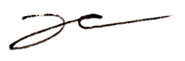
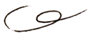
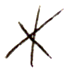
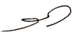

(0)
My first memory is of stealing.
Stealing a small plastic rosary, later draping its string of translucent beads around my neck. I
didn't
understand what I had taken from the other girl. It weighed almost nothing in my hands.
I threw away the rosary that same afternoon, before anyone else had realized what I had done. 
(1)
At the age of 25 I wrote and rewrote the details of this recollection, until I was left only with the taste
of
certain words.
(2)
On manufactured desire—
This past year, I drifted in and out of various archives. While working at the International Library of
Fashion Research last summer, I asked a researcher what drew ordinary visitors into these spaces.
“Sometimes this is the only way people gain access to this world, through printed matter,” she told me.
I began watching the way other visitors handled the archival materials: delicately, almost with
reverence.
“It is not the object but the name that creates desire; it is not the dream but the meaning that sells,”

Barthes writes. Desire circulates through a system that turns garments into aspirations, objects into
ideals. The larger fashion industry operates as a semiotic field, where items of dress and their
representations are imbued with cultural significance. A social code of signs and symbols, words and
images seducing us, conspiring against us.
We are always left wanting.
(3)
It is through textual interpretations, Barthes argues, that fashion first acquires any
ideological value. Opening a
fashion magazine to any page, the reader first experiences a garment through its photographed
representation, then encounters "the same garment, but described, transformed into language; [...] a
leather belt, with a rose stuck in it, worn above the waist, on a soft shetland dress; this is a written
garment." 
Unlike the real garment, which has a practical use, the written garment exists entirely to signify
fashion as a concept. Text and image, the designer’s primary mediums, allow for the reproducibility of
the object of desire as well as the myths, the constructed meanings, through which longing condenses and
forms. As designers and as cultural laborers, I often wonder how we are entangled with—and at times,
implicated within—this system.
(4)
What is left in the wake of desire?
(5)
Another memory, though not of my own:
My parents fell in love at a shoe factory. I was never clear of this past, though I remember my mother
was just three years younger than I am now. My father picked her up from the train station, in a city
where she knew no one.
(6)
Last summer I began researching different populations of Chinese migrant textile workers, how claims of
luxury, value, authenticity depend on laboring bodies largely excluded from dominant systems of cultural
meaning and recognition.
(7)
Working against the myths around the object of desire, where value coheres around glamour and symbolic
power while abstracting the material conditions of production, I insist on embodied processes that make
labor visible in my own practice. Leaving abrasions on metal, attempting to trace the same shadow again
and again, recording the tremors of the hand through repetitive markmaking. The body lingers in the
work.
I begin from Barthes’ premise that language, like the written garment, possesses a material density—an
embodiment that exceeds its role as mere description. Images and texts within fashion ephemera operate
as “parameters of ‘modern’ behaviour”: fossils of graphic production that remain embedded in the past
while gesturing toward conditions of contemporaneity. Thus my process often focuses on extracting text
from archived documents, reconfiguring phrases to produce new modes of encounter for the reader. Through
working with this language-as-material I search for the behaviors, the gestures that surround desire:
how it clings to early memory, how it leaves impressions upon place, how it becomes legible on the body.
I often think about what is lost through preservation, both within and outside of the archive; what is
lost through my methods of translation as materials—steel, glass, silicone, nylon—are transferred onto
text and back again. The affective qualities that are reached by piercing through the skin of words. By
burning through the surface of a phrase. By the heat of meaning-making. I sift through the residue.
(8)
In making physical works that absolve themselves from traditional letterforms, in isolating these structures
from their original texts, my hope is that the work can hold multiple interpretations for the viewer. The
referent is “duplicated not only by copy or translation, but by exegesis, commentary, and the internal
proliferation of meaning.”
(9)
I like to think of this as a form of inhabited absence—meaning embedding itself in surfaces where language once was,
(10)
And where it might still be felt.